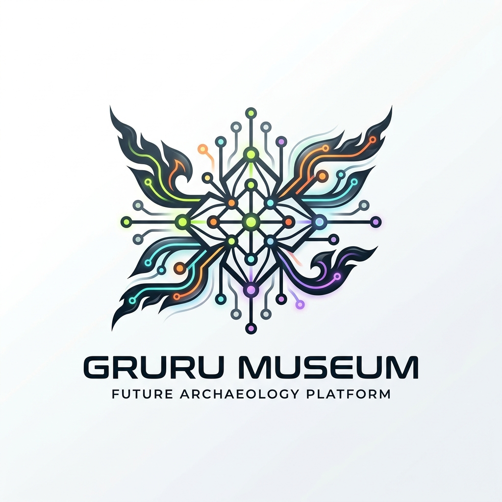
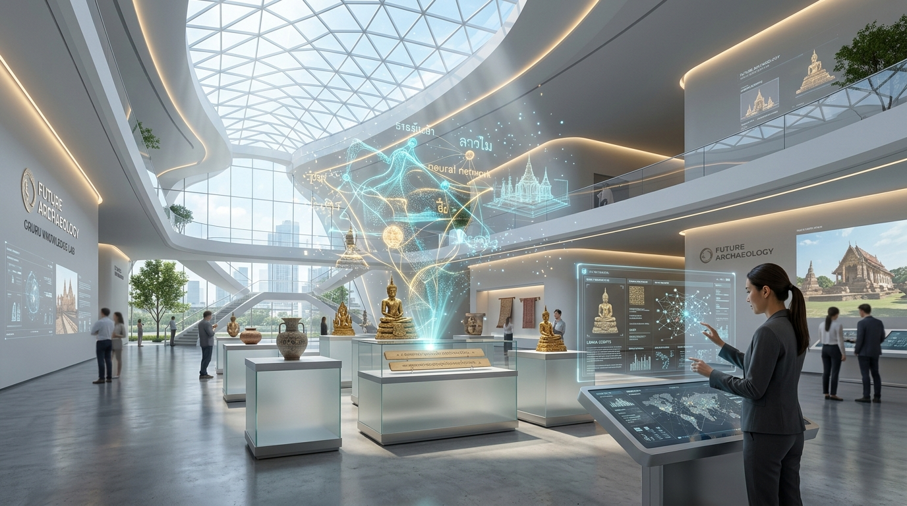

GRURU MUSEUM
“New Knowledge. New Storytelling. Built for Everyday Living.”
ปลุกคลังภูมิปัญญา ประวัติศาสตร์ และวิทยาศาสตร์ไทยที่ซ่อนอยู่ในอดีต ให้กลับมามีชีวิตในรูปแบบ Semantic Knowledge Graph และ Data Booming Engine ที่คนรุ่นใหม่เข้าใจได้ภายใน 3 วินาที และนำไปใช้ได้จริงทุกวัน

ปัญหาเชิงยุทธศาสตร์ & โอกาสของประเทศไทยในยุค Data & AI
ทำไมคลังความรู้เดิมถึงไม่ตอบโจทย์พลเมืองดิจิทัล และประเทศต้องการอะไรในยุคนี้?
แนวคิดหลัก: Future Archaeology “ห้องแล็บนักโบราณคดีจากอนาคต”
จุดบรรจบระหว่างความนิ่งเรียบแบบ Modern Art Gallery กับความล้ำหน้าแบบ Sci-Fi Lab

ย้อนมาศึกษาภูมิปัญญาและประวัติศาสตร์มนุษย์เหมือนศึกษาวัตถุโบราณ ผ่านแท่นโฮโลกราฟิก แสดงโหนดความรู้ที่เชื่อมโยงกันในอากาศ
บุคลิกฉลาดแต่ไม่เก๊ก ขี้เล่นแต่มีหลักฐานเสมอ (Fun with Evidence) ให้คำมั่นสัญญากับประชาชนว่า "ทุกการเข้าชม จะต้องได้อย่างน้อยหนึ่งเรื่องกลับไปใช้ได้จริงในชีวิต"
พันธกิจ 5 ขั้นตอน: กระบวนการแปรรูปภูมิปัญญาสู่ชีวิตจริง
โครงสร้างเส้นทางข้อมูลมาตรฐานของทุกนิทรรศการใน GRURU MUSEUM
คัดสรรความรู้จากประวัติศาสตร์ วิทยาศาสตร์ และภูมิปัญญา ระบุแหล่งที่มาและเอกสารชั้นต้นทุกชิ้นอย่างโปร่งใส
สกัดเอนทิตี (Entity) ความสัมพันธ์ (Relation) และห้วงเวลา (Timeline) แปลงข้อความเป็นชุดข้อมูลกราฟความรู้เชิงความหมาย
นำเสนอผ่าน Visual Storytelling และ Infographic ที่กระชับ ดูจบและเข้าใจได้ครบถ้วนภายในเวลาเพียง 3–5 นาที
เปิดให้ผู้ใช้คลิกสำรวจเครือข่ายความรู้ข้ามยุคสมัยและข้ามศาสตร์ ทั้งวิทยาศาสตร์ เทคโนโลยี วัฒนธรรม และศิลปะ
ปิดท้ายด้วยการ์ดความรู้ที่บอกวิธีนำไปใช้ในชีวิตจริง เช่น เคล็ดลับสุขภาพ การต่อยอดงานสร้างสรรค์ หรือวิธีคิดแก้ปัญหา
นวัตกรรมเด่น: สถาปัตยกรรม “Data Booming” และกราฟความรู้
ทดลองจำลองกลไกการคลิก 1 หัวข้อแล้วระเบิดโหนดความรู้ข้าม 6 มิติใน 40ms
สารแอนโดรกราโฟไลด์ (Andrographolide) ถูกค้นพบและบันทึกในคัมภีร์ใบลาน ก่อนถูกสกัดเป็นยาต้านไวรัสสมัยใหม่
โครงข่ายความรู้แบบบูรณาการ (Integrated Knowledge Graph)
หลอมรวมข้อมูลจาก 4 แหล่งหลัก สู่ขุมพลังปัญญาของชาติ

กราฟความรู้นี้ทำหน้าที่เป็น Ground Truth ที่ผ่านการกลั่นกรองและตรวจสอบแล้ว จึงสามารถใช้เป็นชุดข้อมูลฝึกฝน (Training / RAG Data) ให้โมเดล AI ภาษาไทยของประเทศ ลดปัญหา AI Hallucination และสร้าง AI ที่เข้าใจวัฒนธรรมไทยอย่างลึกซึ้ง
กลุ่มพลเมืองเป้าหมายและผลกระทบต่อเศรษฐกิจดิจิทัล
ตอบโจทย์คนวัยทำงานรุ่นใหม่ (22–40 ปี) ด้วย Insight ที่ผ่านการวิเคราะห์มาอย่างแม่นยำ
สถาปัตยกรรมระบบและมาตรฐานเทคโนโลยีระดับสากล
ออกแบบบนพื้นฐานความปลอดภัย ความเร็ว และความครอบคลุมสำหรับคนไทยทุกคน
- สร้างด้วย Next.js 15, TypeScript และ Tailwind CSS สถาปัตยกรรมระดับองค์กร
- ระบบฟอนต์มาตรฐาน TH Sarabun: Chakra Petch (หัวข้อ) และ IBM Plex Sans Thai (เนื้อหา)
- ระบบจัดวางแบบ 12/8/4 คอลัมน์ รองรับหน้าจอคอมพิวเตอร์ แท็บเล็ต และสมาร์ตโฟนอย่างไร้รอยต่อ
- เรนเดอร์กราฟความรู้ขนาด 100,000+ โหนดได้อย่างลื่นไหล 60 FPS บน Canvas
- แอนิเมชันการสำรวจตามหลัก Scan → Decode → Connect ระยะเวลา 40–150ms
- รองรับการสำรวจผ่านคีย์บอร์ดและมินิแมปสำหรับผู้ใช้งานขั้นสูง
- อัตราความคมชัดของสี (Contrast Ratio) สูงถึง 16.8:1 สำหรับเนื้อหาหลัก และ 5.3:1 สำหรับป้ายกำกับ
- แยก 6 หมวดหมู่ด้วยรูปทรงเรขาคณิต เพื่อให้ผู้มีความบกพร่องทางสายตาแยกแยะได้
- รองรับโหมดลดการเคลื่อนไหว (Prefers-Reduced-Motion) และไม่กะพริบเกิน 3 ครั้ง/วินาที
- โครงสร้างข้อมูลมาตรฐานสากล: id, title, era, relation (influenced, derived_from, used_in)
- พร้อมเปิด Open API เชื่อมต่อกับระบบ e-Government และฐานข้อมูลวัฒนธรรมภาครัฐ
- ระบบ Specimen Label ระบุรหัสอ้างอิงชัดเจน เช่น
GRM-1872-SCI-014
แผนการดำเนินงานและข้อเสนอความร่วมมือกับกระทรวงดิจิทัลฯ
โรดแมป 3 ระยะ และข้อเสนอเชิงนโยบายเพื่อขับเคลื่อนระดับชาติ
สร้างสถาปัตยกรรมเว็บ กราฟิกจำลอง 50 หัวข้อความรู้ และพัฒนา Data Booming Engine สำหรับทดสอบกลุ่มผู้ใช้ตัวอย่าง
เชื่อมโยงคลังข้อมูลดิจิทัลภาครัฐ (e-Museum, หอสมุดแห่งชาติ, depa) สู่ระบบกราฟความรู้ และทดสอบกับผู้ใช้ 10,000 คน
เปิดตัวเป็นแพลตฟอร์มพิพิธภัณฑ์ความรู้ดิจิทัลแห่งชาติ เปิด Open Graph API ให้นักวิจัยและภาคเอกชนนำไปสร้างสรรค์นวัตกรรม
“เปลี่ยนมรดกทางปัญญาของชาติ
ให้กลายเป็นพลังขับเคลื่อนชีวิตคนรุ่นใหม่”
GRURU MUSEUM มิใช่เพียงการสร้างเว็บไซต์ใหม่ แต่คือการวาง โครงสร้างพื้นฐานความรู้ดิจิทัลของประเทศ ที่ผสานมรดกไทยเข้ากับเทคโนโลยีล้ำสมัย สร้างความภูมิใจ ความรู้ที่ใช้ได้จริง และต่อยอดเศรษฐกิจดิจิทัลอย่างยั่งยืน